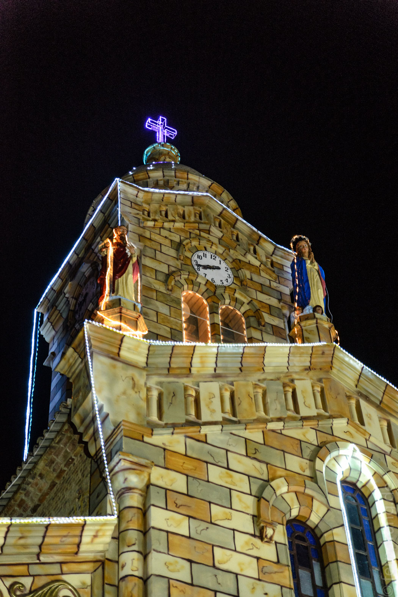

Mit einem Tag Verspätung sind wir in Richtung Cocuy aufgebrochen. Entgegen unserer Befürchtungen war es kein Problem in Tunja einen Bus nach Güican, dem Ausgangspunkt unserer fünftägigen Trekking-Tour zu bekommen. Man muss nur mit einem großen Rucksack am Busbahnhof stehen und sich fragen lassen. Wir sind in einem kleinen Bus von "Paz del Rio" untergekommen, die die Strecke als einzige morgens fahren. Allerdings mussten wir anfangs auf einem Eimer und einem Kissen im Gang sitzen – glücklicherweise nicht sehr lang. Aber auch die bequemen Sitze haben die achtstündige Fahrt nicht besser gemacht. Der längste Teil führte über wilde Serpentinen durch eine bäuerliche Landschaft mit Wäldern, Wiesen und Kühen. Das war anfangs malerisch, hat aber erheblich an Reiz verloren, als sich der erste Mitfahrer übergeben hat. Der Fahrer hat den Gestank geschickt mit einem Päckchen Kaffeepulver verschwinden lassen. Aber es hat nicht lange gedauert, bis der nächste das Tütchen gezückt hat. So haben wir uns sehr, sehr langsam auf über 3000m geschraubt. Die letzten 15km Luftlinie haben sich auf über 100km über Gipfel und Täler gezogen, die uns vier Stunden gekostet haben.
Dementsprechend zerstört sind wir in Güican angekommen. Der Ort ist klein und reizlos und wird nur von Wanderern besucht, die von hier in den Nationalpark "El Cocuy" starten. Die ausgewachsene Kirche besticht mit aufgesprühtem "Graffiti-Marmor". Unser Hotel "Brisas del Nevado" hat nicht zum Wohlbefinden beigetragen, da wir nur ein Zimmer mit Stockbetten und einem versifften Gemeinschaftsklo bekommen hatten. Der Laden verdankt seine Existenz vermutlich der fehlenden Alternativen. Im Nachbarort Cocuy hätte es mehr Unterkünfte gegeben, und auch der Ort sah etwas netter aus.
